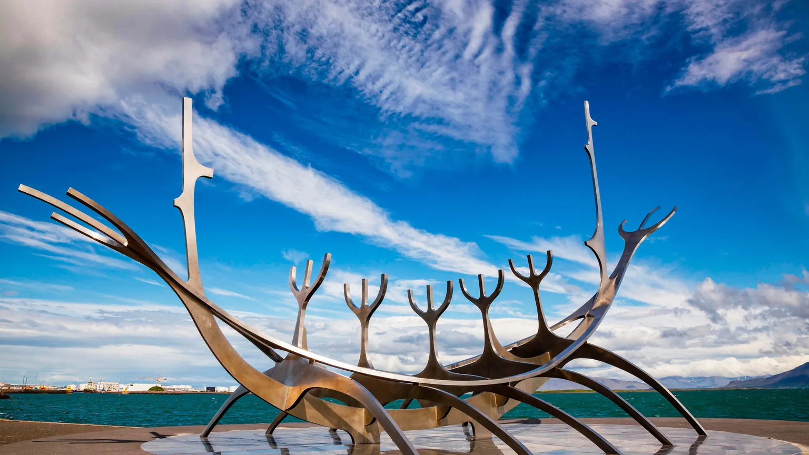

Reikiavik › Qué hacer
Qué hacer en Reikiavik: la lista ordenada por horas de luz
No una lista de treinta monumentos. Una lista de lo que tiene que pasar mientras hay sol, lo que está igual de bien a oscuras y lo que cuesta cada cosa.
Casi todas las listas de «qué hacer en Reikiavik» están ordenadas por el criterio equivocado. Por valoración, las lagunas suben arriba del todo y la iglesia acaba décima. Por lo que permite un día real aquí, el orden cambia por completo: porque en diciembre esta ciudad te da unas cuatro horas de luz aprovechables, y en junio la luz ya no se acaba.
De ahí la lista de abajo. No lo mejor, sino lo que el sol deja hacer. La lista de día es corta y casi toda gratis, y en el fondo es un único paseo por el centro: la misma línea que sigue la ruta a pie por tu cuenta con audioguía. La lista de noche es larga, cálida y sobre todo bajo techo, y es donde se va el dinero.
De un vistazo
- El límite de verdad
- Las horas de luz, ni el dinero ni las distancias
- Mes más oscuro
- Diciembre: unas cuatro horas aprovechables
- Lo barato que vale
- Una piscina municipal, 1.500 ISK, abierta hasta las 22:00
- Lo más caro de la ciudad
- Perlan, 7.090 ISK por adulto
- Gratis e infravalorado
- El jardín de Einar Jónsson: 26 bronces, siempre abierto
- Hora tope
- 16:45, última subida a la torre, del 1 de septiembre al 31 de mayo
- Reservar antes de llegar
- Solo las lagunas
- Días para la ciudad
- Dos
La cifra que decide tu lista
Reikiavik está justo por debajo del círculo polar ártico, y el salto entre pleno verano y pleno invierno es más bruto que en casi cualquier sitio donde hayas planeado un viaje antes. A finales de diciembre el sol asoma por encima de los tejados sobre las 11:20 y se ha ido a las tres y media. En junio casi no se pone.
Eso no es un detalle meteorológico: es la estructura de tu día. Cuatro horas de luz significan un bloque fuera y no dos, y todo lo que metas ahí es lo que no metes en otra cosa. En junio el límite desaparece y el orden de abajo deja de importar, que es un lujo en sí mismo.
El segundo límite es un reloj, no una estación. Hallgrímskirkja es el único mirador alto del centro, y del 1 de septiembre al 31 de mayo la iglesia cierra a las 17:00 y la última subida es a las 16:45. Las entradas se venden en la puerta y no se reservan. Si la pierdes, ese día no hay segunda oportunidad.
Gasta la luz en esto
Cinco cosas, y cuatro son gratis. Si solo te toca un bloque con sol, es para esto.
- El paseo por el centro viejo. Arnarhóll, Austurvöllur, el estanque, la calle pintada, la iglesia, el paseo marítimo, el puerto viejo. Unos 5 km, llano salvo una cuesta, dos horas a ritmo normal. Gratis. Es a lo que viene la gente, aunque lo llame de otra manera.
- La torre de Hallgrímskirkja. 1.500 ISK para adultos, 200 ISK para niños de 7 a 16 años y 1.300 ISK para estudiantes. La única vista en picado sobre los tejados de colores y el único punto de esta página con hora límite. Entrar en la iglesia es gratis; lo que se paga es el ascensor.
- El paseo marítimo de Harpa a Grandi. El Sun Voyager, el auditorio de cristal, el puerto viejo con sus barcos y su buque gris de guardacostas, y luego Grandi y el montículo de hierba del final. Gratis, y sin sentido a oscuras: todo este tramo vive de las líneas de visión sobre la bahía hasta el Esja.
- El jardín de esculturas de Einar Jónsson. Detrás del museo que hay junto a la iglesia: 26 bronces en un jardín con tapia, abierto a todo el mundo, todo el año, de día y de noche, sin entrada. Es lo gratis peor vendido del centro.
- Un barco, si la temporada acompaña. El avistamiento de ballenas funciona todo el año, pero en pleno invierno los operadores principales se quedan en una única salida a las 13:00, justo en mitad de la luz. La salida dura de dos horas y media a tres y media. Vale la pena, siempre que sepas que es el bloque entero.
Todo lo de esa lista menos la torre es gratis, y es justo lo que se entiende mal de Reikiavik. La ciudad cara es la de comer y la de las excursiones, no la de los monumentos.
Caminar el centro sabiendo por delante de qué pasas
La ruta de arriba es lo único realmente imprescindible aquí, y no se explica casi nada a sí misma. Por qué una capital parece un pueblo grande, qué representa de verdad la escultura de acero, por qué un patrullero gris pesa más de lo que aparenta: nada de eso está en un cartel.
El paseo con audio de TouringBee sigue la misma línea: 27 historias de Arnarhóll a Þúfa, con mapa GPS sin conexión, así que no hay grupo ni hora de salida. Sales cuando se abre la ventana del tiempo.
Audioguía de Reikiavik — 9,99 €
Esto está igual de bien a oscuras
La idea útil sobre el invierno de aquí es que la oscuridad quita menos de lo que parece. Los islandeses no dejan de salir en diciembre: se meten en agua caliente.
| Qué | Adulto | Horario | Por qué la oscuridad no estorba |
|---|---|---|---|
| Piscina municipal | 1.500 ISK | Casi siempre 06:30–22:00 | Bañeras calientes al aire libre con frío y de noche son el objetivo, no un apaño |
| Perlan | 7.090 ISK | 09:00–21:00 todos los días | Cueva de hielo bajo techo y sesión de planetario; el mirador de 360° va incluido y no se vende suelto |
| Sky Lagoon | Desde 14.990 ISK | Entrada por franjas | A un paso del centro, y la vista al mar funciona con luz y sin ella |
| Museo Nacional | 3.300 ISK | 10:00–17:00 | Mil años en una sola planta; menores de 18 gratis |
| Exposición 871±2 | 3.100 ISK | 10:00–17:00 | Un muro de casa larga excavado y dejado donde apareció, bajo la acera |
| Museo de Arte de Reikiavik | 2.550 ISK | Hafnarhús hasta las 22:00 los jueves | Una entrada para los tres edificios, válida 24 horas |
| FlyOver Iceland | 5.690 ISK en línea | Desde las 09:00 | Los paisajes del país sin la carretera; el vuelo en sí dura menos de diez minutos |
Las piscinas merecen párrafo aparte. La entrada de adulto cuesta 1.500 ISK, los de 10 a 17 años pagan 400 ISK y los menores de diez entran gratis, y Laugardalslaug y Vesturbæjarlaug abren de 06:30 a 22:00 entre semana. Sundhöll Reykjavíkur, la antigua bonita del centro, cierra un rato a mediodía los martes, jueves y viernes: compruébalo antes de cruzar la ciudad.
Lo único que hay que reservar antes de llegar
Sky Lagoon y la Laguna Azul funcionan por franjas horarias, y las buenas de la tarde se agotan con mucha antelación. Nada más de esta página necesita reserva: museos, piscinas y torre venden en la puerta.
Ver entradas de lagunas y museosGrandi: la media jornada que las listas entierran
Grandi es el antiguo barrio del pescado, al fondo del puerto, y es donde se han ido juntando casi todas las atracciones bajo techo. Si el tiempo se tuerce, tuerce tú hacia allí.
- Whales of Iceland — modelos a tamaño real de las ballenas islandesas, 4.300 ISK, todos los días de 10:00 a 17:00 todo el año, con visitas guiadas a las 11:00 y las 15:00.
- FlyOver Iceland — 5.690 ISK en línea frente a 6.250 ISK en taquilla, 3.690 ISK los niños. El vuelo dura entre ocho y diez minutos; calcula una hora para todo.
- Museo Marítimo de Reikiavik — 2.550 ISK, todos los días de 10:00 a 17:00, en una antigua fábrica de pescado del muelle.
- El ICGV Óðinn — el buque de guardacostas amarrado delante del museo, con un historial de combate frente a una armada mucho mayor. Las visitas a bordo van del 1 de marzo al 31 de octubre y duran poco menos de una hora. La entrada combinada de museo y barco cuesta 3.850 ISK.
- Þúfa — un sendero en espiral sobre un montículo de hierba artificial con una caseta de secar pescado arriba. Gratis, y la vista más tranquila de la ciudad.
Grandi está en el extremo lejano de esa misma línea de costa: desde Harpa se va pegado al agua, y el camino es media razón para ir.
Cuánto cuesta todo esto
Abajo están las tarifas de adulto publicadas, leídas en las webs de los propios operadores en noviembre de 2026. Los niños entran gratis o casi gratis en casi todas partes, y conviene saberlo antes de reservar para una familia de cuatro.
| Entrada | Adulto | Niños |
|---|---|---|
| Piscina municipal | 1.500 ISK | 400 ISK (10–17) · gratis hasta los 10 |
| Torre de Hallgrímskirkja | 1.500 ISK | 200 ISK (7–16) |
| Museo Einar Jónsson | 1.500 ISK | Gratis hasta los 18 · jardín siempre gratis |
| Museo de Arte (3 sedes, 24 h) | 2.550 ISK | Gratis hasta los 18 |
| Museo Marítimo | 2.550 ISK | Gratis hasta los 18 |
| Exposición 871±2 | 3.100 ISK | Gratis hasta los 18 |
| Museo Nacional | 3.300 ISK | Gratis hasta los 18 |
| Museo Falológico | 3.900 ISK | Gratis hasta los 13 |
| Whales of Iceland | 4.300 ISK | 2.150 ISK (7–15) · gratis hasta los 7 |
| FlyOver Iceland | 5.690 ISK en línea | 3.690 ISK |
| Perlan | 7.090 ISK | 5.090 ISK (5–12) · gratis hasta los 5 |
| Laguna Azul, Comfort | Desde 11.990 ISK | — |
| Sky Lagoon, Saman | Desde 14.990 ISK | — |
Moverse entre unos y otros es barato y casi nunca hace falta. Un billete sencillo de Strætó cuesta 690 ISK y vale 75 minutos con transbordos, de 12 a 17 años y mayores de 67 pagan 345 ISK, y los menores de 11 viajan gratis. No hay bono de día, pero hay tope: con el mismo medio de pago nunca te cobran más de tres viajes diarios, o sea 2.070 ISK como máximo.
¿Merece la pena la Reykjavík City Card?
Cuesta 6.100 ISK las 24 horas, 8.500 las 48 y 10.500 las 72, y cubre diecisiete museos, ocho piscinas, autobuses urbanos sin límite y una travesía a Viðey. Los menores de 18 entran gratis en los museos acompañando a una tarjeta de adulto de todas formas.
Haz la cuenta antes de comprar. Una piscina a 1.500, el ferri de ida y vuelta a Viðey a 2.500 y dos viajes de autobús a 690 suman 5.380: todavía por debajo de 6.100. La tarjeta empieza a ganar en cuanto entra un museo de verdad en la lista, y gana con holgura si entran dos.
Si tu plan es el paseo, la torre y una piscina, déjala. Si tu plan es un día de lluvia bajo techo, cómprala.
Solo parte del año
| Qué | Temporada | Nota |
|---|---|---|
| Frailecillos | Finales de abril al 20 de agosto | Una hora de barco desde el puerto viejo, de 7.800 a 8.300 ISK, hasta una isla con colonia |
| Auroras boreales | Aproximadamente de septiembre a abril | Hacen falta oscuridad y cielo despejado; el problema es la luz de la ciudad |
| Visitas al Óðinn | Del 1 de marzo al 31 de octubre | El museo abre todo el año; el barco no |
| Isla de Viðey | Solo fines de semana, del 1 de sept. al 14 de mayo | En invierno sale de Skarfabakki a las 13:15, 14:15 y 15:15; 2.500 ISK ida y vuelta |
| Ballenas | Todo el año | Pero de noviembre a enero es una única salida a las 13:00, y se lleva la luz del día |
| Vista desde la torre | Todo el año | Última subida a las 16:45 del 1 de septiembre al 31 de mayo, y a las 19:45 en verano |
Dos puntos merecen aviso. El ferri a Viðey sale del puerto viejo solo entre el 1 de junio y el 31 de agosto. El resto del año zarpa de Skarfabakki, más al este, y eso ya es ir en autobús y no dar un paseo. Y ninguno de los operadores de ballenas publica ahora mismo un porcentaje de avistamientos; los dos dan un billete gratis para repetir si el mar sale vacío. Horarios y precios se comparan mejor entre operadores antes de regalarle un bloque de luz a un barco.
Comer, y la única cola que conviene esquivar
El clásico barato es la pylsa islandesa, un perrito de cordero, cerdo y ternera. Pide eina með öllu, «uno con todo». El puesto famoso de Tryggvagata no publica su precio; los sondeos independientes de 2026 sitúan el perrito en torno a 900 ISK, lo que lo deja con diferencia como la comida caliente más barata del centro.
A mediodía ese puesto tiene la cola más fiable de la ciudad. La sucursal de la misma cadena en Austurstræti abre las veinticuatro horas y casi nunca tiene. En invierno, pasar luz de día en una cola es más o menos lo más caro que puedes hacer con ella.
Los restaurantes con mesa son caros de verdad, y ahí es donde un día en Reikiavik deja de ser barato. El agua del grifo es excelente y gratis en todas partes, así que una botella reutilizable ahorra más de lo que parece.
Qué saltarse y qué hacer en su lugar
- El autobús turístico. El centro se cruza andando en veinte minutos y el autobús no para donde está lo bueno. Camina.
- Dejar la torre para el final del día. En invierno la última subida es a las 16:45 y la luz se ha ido antes. Sube pronto.
- La Laguna Azul como día de ciudad. Está a una hora, en la carretera del aeropuerto, y desde el centro se come media jornada. Engánchala a un vuelo: el desglose completo de precios y tiempos va aparte.
- Buscar la aurora desde el centro. Gana el alumbrado. Dónde ponerse importa más que qué noche eliges.
- Meter el Círculo Dorado y la ciudad en un día. Es una jornada entera fuera, y Reikiavik la verás por la ventanilla. Dale su propio día.
Una forma para dos días
Día uno, el paseo: centro, torre antes de que se vaya la luz, paseo marítimo, puerto viejo y una piscina por la tarde. Día dos, Grandi y lo que el tiempo te obligue a meter bajo techo, con una franja de laguna reservada para el final.
Dónde duermes decide qué piscina acaba siendo la tuya y cuántas veces repites el mismo tramo. Cualquier dirección dentro del código postal 101 deja toda la lista de día a un cuarto de hora andando, y en diciembre eso vale más que la habitación. Compara alojamiento céntrico por ese criterio y no por las estrellas.
Si solo tienes un día, el plan hora a hora está montado alrededor del atardecer. Si quieres que te expliquen por delante de qué pasas, eso es la ruta por tu cuenta. Si prefieres a alguien de carne y hueso, los tours a voluntad tienen salidas fijas y un circuito más corto.
Preguntas frecuentes
¿Qué hay que hacer en Reikiavik antes que nada?
Cruzar el centro a pie. Casi todo lo que viene a ver la gente está sobre una sola línea, de Arnarhóll al puerto viejo: unos 5 km y dos horas. Hallgrímskirkja, la calle del arcoíris, Harpa y el Sun Voyager están todos en ella, y plantarse delante no cuesta nada. La lista de pago empieza después de ese paseo.
¿Cuántos días hacen falta en Reikiavik?
Para la ciudad en sí, dos es la respuesta honesta. Un día cubre el paseo, la torre y una piscina. El segundo te da Grandi, un par de museos y una laguna sin correr. Todo lo demás —el Círculo Dorado, la costa sur— es una excursión fuera de la ciudad, no más Reikiavik.
¿Qué se puede hacer gratis en Reikiavik?
Más de lo que sugieren los precios. Toda la ruta a pie es gratis, incluido el interior de Hallgrímskirkja y el de Harpa. En el jardín de detrás del museo Einar Jónsson hay 26 bronces y está abierto todo el año, de día y de noche. El paseo marítimo, Tjörnin, Austurvöllur y la calle pintada también son gratis, y el agua del grifo igual.
¿Merece la pena la Reykjavík City Card?
Solo si los museos están de verdad en el plan. La tarjeta de 24 horas cuesta 6.100 ISK. Una piscina son 1.500, el ferri de ida y vuelta a Viðey 2.500 y dos viajes de autobús 1.380: vas por 5.380 sin un solo museo. Añade el Museo Nacional a 3.300 y sale a cuenta. Haz tres cosas al aire libre y una piscina, y no.
¿Qué se hace en Reikiavik en invierno, cuando es de noche?
Casi toda la lista, en realidad. Las piscinas abren hasta las 22:00 y están mejor con frío y a oscuras, no peor. Los museos mantienen el mismo horario todo el año. Al planetario de Perlan y a las lagunas el sol les da igual. La oscuridad solo te quita la vista desde la torre y el puerto, y a cambio te da la aurora.
¿Merece la pena ir a Reikiavik unos días?
Sí, y por una razón concreta: es la capital más septentrional del mundo y es lo bastante pequeña como para cruzarla a pie en una tarde. El agua geotérmica aquí es costumbre diaria y no un capricho de spa, y las excursiones arrancan a menos de una hora del hotel. Lo que no es, es una ciudad de grandes monumentos.
¿Qué no merece la pena en Reikiavik?
Timos no hay, pero dos cosas suelen ser horas tiradas. Hacer cola en el puesto de perritos famoso a mediodía cuesta más luz de la que vale el perrito, y la sucursal de Austurstræti abre las veinticuatro horas. Y un autobús turístico tiene poco sentido en un centro que se cruza andando en veinte minutos.
Para leer después
- Reikiavik a pie por tu cuenta — la ruta parada por parada y lo que aporta la audioguía
- Hallgrímskirkja y la torre — entradas, horarios y el tope de las 16:45
- Reikiavik en un día — la ruta que las horas permiten de verdad
- Sky Lagoon — precios, horarios y a qué hora reservar
- Auroras boreales — temporada, previsión y dónde ponerse
- Del aeropuerto de Keflavík a la ciudad — traslados y qué hacer antes del check-in
- Todas las guías de Reikiavik
En resumen
Ordena por luz, no por valoración. Las horas claras, para el paseo, la torre y la orilla, que son gratis salvo el ascensor. Las oscuras, para piscinas, museos y una laguna, que es donde se va el dinero igualmente. Dos días hacen la ciudad bien; un día la hace con honestidad.
Caminarlo con las historias
27 historias a lo largo de la ruta de Arnarhóll a Þúfa. Mapa sin conexión, tu ritmo, un solo pago.
TouringBee publica el paseo con audioguía autoguiado de Reikiavik, así que esta página no es neutral al respecto, y justamente por eso lo gratis va arriba del todo y el paseo se describe como algo que puedes hacer sin nosotros. Algunos enlaces de esta página son de afiliado: si reservas a través de ellos podemos llevarnos una comisión, sin coste adicional para ti. Los precios de entrada y los horarios se leyeron en las webs de los propios operadores el 5 de noviembre de 2026; la cifra del perrito es una estimación ajena, porque el puesto no publica la suya. En Islandia los precios se mueven, así que compruébalos antes de salir.